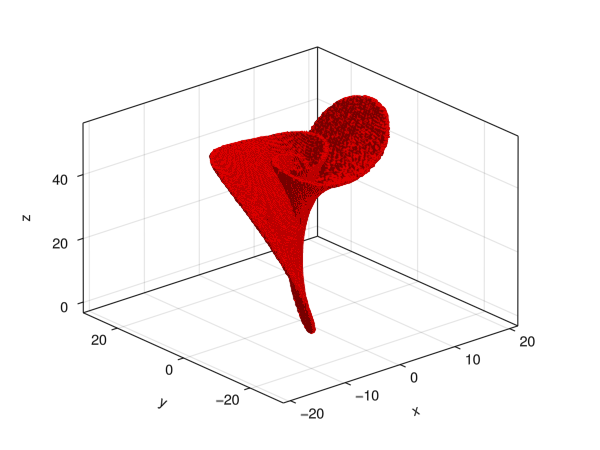
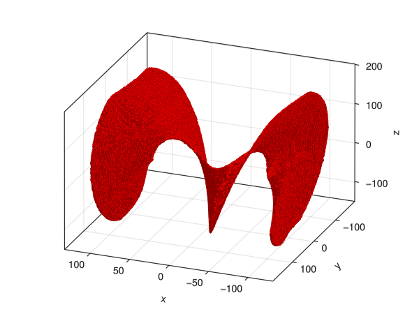

Unstable Set
In the following we are presenting the algorithm to cover invariant manifolds within some domain $Q$, which has to contain a fixed point.
For simplicity, we will explain the algorithm for the case of the unstable manifold. However one can compute the stable manifold as well by considering the boxmap describing the inverse map $f^{-1}$ as input argument for the algorithm.
Mathematical Background
The unstable manifold is defined as
\[W^U(x_0) = \{x: \lim_{k \to - \infty} f^k(x) = x_0 \}\]
where $x_0$ is a fixed point of $f$.
The idea behind the algorithm [4] to compute the unstable manifold can be explained in two steps. Before starting we need to identify a hyperbolic fixed point and the region $Q$, which we are going to compute the manifold in. The region $Q$ needs to be already partitioned into small boxes.
- initialization step Since a fixed point is always part of the unstable manifold, we need to identify a small region/box containing this fixed point. This box may be known a-priori, or one can use the
relative_attractoraround a small region where one suspects a fixed point to exist. - continuation step The small box containing the fixed point is then mapped forward by
Fand the boxes that are hit under the image are added to the box collection. Then those newly included boxes are mapped forward and the procedure is repeated until no new boxes are added.
One might not be able to compute the parts of the unstable manifold whose preimage lies outside the domain $Q$. Thus, it is important to choose $Q$ large enough.
Example
using GAIO
# the Lorenz system
const σ, ρ, β = 10.0, 28.0, 0.4
v((x,y,z)) = (σ*(y-x), ρ*x-y-x*z, x*y-β*z)
# time-0.2 flow map
f(x) = rk4_flow_map(v, x)
center, radius = (0,0,25), (30,30,30)
Q = Box(center, radius)
P = BoxGrid(Q, (256,256,256))
F = BoxMap(:adaptive, f, Q)
# equilibrium
x = (sqrt(β*(ρ-1)), sqrt(β*(ρ-1)), ρ-1)
S = cover(P, x)
W = unstable_set(F, S)202489 - element BoxSet in 256 x 256 x 256 - element BoxGridusing GLMakie
fig, ax, ms = plot(W);
We can animate this plot using the record function from Makie.jl
fig = Figure();
ax = Axis3(fig[1,1], viewmode=:fit)
ms = plot!(ax, W, color=(:red, 0.6))
n_frames = 120
record(fig, "unstable.gif", 1:n_frames, framerate=20) do frame
v = sin(2pi * frame / n_frames)
ax.elevation[] = pi/8 - pi * v / 10
ax.azimuth[] = pi * v / 2
end;"unstable.gif"fig, ax, ms = plot(W);# integrate in reverse time:
# 5 steps of rk4 method with step size -0.01
f(x) = rk4_flow_map(v, x, -0.01, 5)
center, radius = (0,0,25), (120,180,160)
Q = Box(center, radius)
P = BoxGrid(Q, (256,256,256))
F = BoxMap(:grid, f, Q, n_points=(8,8,8))
# Equillibrium (0,0,0) lies at the bottom corner of one box.
# Cover a small neighborhood of (0,0,0) instead
x = Box( (0,0,0), 0.01 .* (1,1,1) )
S = cover(P, x)
W2 = unstable_set(F, S)397144 - element BoxSet in 256 x 256 x 256 - element BoxGridfig = Figure();
ax = Axis3(fig[1,1], azimuth=0.62*pi)
ms = plot!(ax, W2)
record(fig, "stable.gif", 1:n_frames, framerate=20) do frame
v = sin(2pi * frame / n_frames)
ax.elevation[] = pi/10 - pi * v / 20
ax.azimuth[] = -pi / 5 + 2pi * v / 5
end;"stable.gif"Implementation
function unstable_set(F::BoxMap, B::BoxSet)
B₀ = B
B₁ = B
while !isempty(B₁)
B₁ = F(B₁) # map the current interation forward
setdiff!(B₁, B₀) # remove boxes we've already seen
union!(B₀, B₁) # add the new boxes to the collection
end
return B₀
endGAIO.unstable_set — Functionunstable_set(F::BoxMap, B::BoxSet) -> BoxSetCompute the unstable set for a box set B. Generally, B should be a small box surrounding a fixed point of F. The partition must be fine enough, since no subdivision occurs in this algorithm.